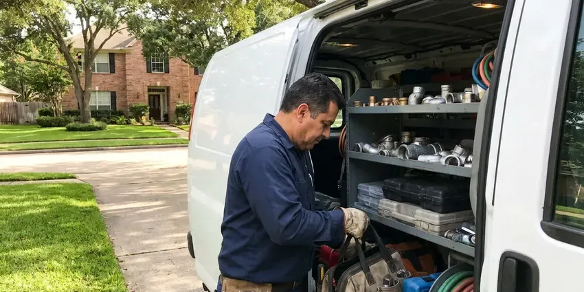

Commercial Plumbing in Shelburne, VT
For all your company's plumbing needs in Shelburne, VT, CKV Plumbing provides comprehensive commercial plumbing services.
- Upfront Pricing
- Fast Emergency Business Response
- Local Vermont Experts
- Maintenance Contracts Available
Get a Commercial Plumber You Can Rely On in Shelburne, VT.
Don't let plumbing problems disrupt your operations. Get in touch with us for a quick resolution.
Top-Rated Commercial Plumbing Services in Shelburne, VT
When it comes to commercial plumbing in Shelburne, VT, CKV Plumbing has the expertise to handle the unique demands of commercial properties. We provide preventative maintenance, emergency repairs, and new installations to keep your business operating without interruption.
Our expertise includes:
- Backflow prevention device testing and repair
- High-efficiency commercial water heater repair and installation
- Flushometer, urinal, commercial water heater and booster pump service

Additional Plumbing Maintenance Services in Shelburne, VT
Our maintenance and specialty plumbing services in Shelburne, VT catch small problems before they become emergencies.


Customers
Why Choose CKV Plumbing for Commercial Plumbing in Shelburne, VT?
We focus on minimizing downtime for your business, recognizing that every hour counts. Our experienced technicians deliver fast, effective solutions to get your commercial plumbing back in optimal condition quickly.
- Business Continuity, We ensure minimal disruption to your commercial operations with prompt service and lasting repairs.
- Detailed Records, You get invoices, photos and test reports for each service visit.
- Code Compliance, All our commercial plumbing work strictly adheres to local Shelburne codes and Vermont regulations, ensuring safety and legality for your business.
Citywide Coverage
CKV Plumbing proudly serves every commercial district and neighborhood of Shelburne, ensuring that no business is left without expert plumbing support. Whether you operate a restaurant downtown or an office park on the outskirts, our team is ready to help.
Experienced Team
Each member of our CKV Plumbing commercial plumbing crew is licensed and insured, bringing years of dedicated experience to every job. We ensure our team stays updated on the latest commercial plumbing technologies and Vermont codes to provide top-quality service.
Safety-First Approach
Safety is paramount in all commercial plumbing projects undertaken by CKV Plumbing. We adhere to strict safety protocols and ensure all installations and repairs meet or exceed industry standards and local Shelburne building codes, protecting your property and employees.
Trusted Certified Shelburne Plumbing Services Professionals
At CKV Plumbing, we take pride in providing licensed, certified plumbing services throughout Shelburne, VT. Backed by recognized industry credentials, our experienced plumbers combine technical skill with genuine customer care. Whether it is repair, installation, or maintenance, we follow strict safety and quality standards to deliver long-lasting results you can trust.
Call Us Now PHCC Plumbing Contractor Recognition
PHCC Plumbing Contractor Recognition Better Business Bureau (BBB) Accreditation
Better Business Bureau (BBB) Accreditation Angi Certified Pro
Angi Certified Pro ISO 9001 Quality Management Certification
ISO 9001 Quality Management CertificationReliable Commercial Plumbing Services in Shelburne, VT
Commercial Water Heater Repair & Installation in Shelburne, VT
Commercial water heaters are often larger, more complex, and operate under greater stress than residential units, commonly requiring specialized repair and maintenance. We service all major brands including A.O. Smith, Rheem, and Bradford White commercial models, making sure your business has a consistent supply of hot water. Whether it's a gas, electric, or tankless system, our technicians are trained in diagnosing issues like pilot light failures, heating element malfunctions, or pressure relief valve problems specific to high-demand commercial use in Shelburne. Proper sizing and installation are crucial for efficiency and longevity.

Tenant Improvement and Build-Out Plumbing in Shelburne, VT
When a space changes hands, the plumbing often needs to change too. We install new restrooms, break rooms, mop sinks and kitchen fixtures for tenant improvements. Our team works from your plans, coordinates with general contractors and passes inspections on schedule. We also cap and abandon old lines correctly.
Backflow Testing and Repair in Shelburne
Most water providers require annual testing of backflow prevention assemblies on commercial properties. We test reduced pressure zone, double check and pressure vacuum breaker assemblies with calibrated gauges. When a device fails, we rebuild it with manufacturer kits from Watts, Wilkins or Febco. We submit the results to your water provider so you remain in compliance.
Backflow Prevention Device Services in Shelburne
Backflow prevention devices are critical for protecting the public water supply from contamination, a significant concern for commercial properties in Shelburne. Most water providers require annual testing and certification of these devices. Our certified plumbers provide comprehensive testing, repair, and installation of backflow preventers, ensuring your business remains compliant and safe. We handle all types, including reduced pressure zone (RPZ) assemblies and double check valve assemblies, which are common in commercial and industrial applications. Keeping these devices in good working order is a basic safety measure.
Commercial Restroom Fixture Service in Shelburne, VT
Maintaining functional and hygienic restrooms is vital for any commercial establishment in Shelburne, VT. CKV Plumbing provides comprehensive services for commercial restroom fixtures, including repair and replacement of toilets, urinals, sinks, and automatic faucets. We address common issues like persistent leaks, clogs, and low water pressure, making sure your commercial restrooms are always in excellent working order for your patrons and employees.
Slab Leak Detection & Repair for Businesses in Shelburne
Slab leaks can be especially damaging for commercial buildings, especially those built on concrete slab foundations. Clay soils in river valleys drain poorly and can hold water against foundations, so sump systems are common in low-lying homes. These leaks, often caused by shifting soil or corrosive water, can undermine foundations, lead to mold growth, and cause significant water waste. Our technicians use advanced acoustic and thermal imaging equipment to pinpoint slab leaks without invasive demolition. Once located, we provide practical repair solutions, often involving re-routing or pipe repair, to protect your commercial property and prevent costly structural damage in Shelburne.
Multi-Family and Property Management Plumbing in Shelburne
Apartment complexes and HOAs need a plumber who can handle many units and fast turns. We repair leaks, replace water heaters, clear stacks and repipe buildings while keeping residents informed. Property managers get consistent pricing and detailed invoices for each unit. We also help plan capital projects like building-wide repipes.

Commercial Leak Detection & Repair in Shelburne, VT
Even small leaks in a commercial setting can lead to significant water damage, mold growth, and high utility bills. CKV Plumbing uses advanced leak detection technology, such as acoustic sensors and thermal imaging, to pinpoint hidden leaks in walls, ceilings, and underground pipes without destructive exploration. Once located, our skilled plumbers perform efficient and durable repairs to restore the integrity of your commercial plumbing system in Shelburne, VT.
Commercial Plumbing Near Me in Shelburne, VT
We are dedicated to providing quick and efficient commercial plumbing solutions across Shelburne, VT. Our technicians are carefully dispatched to keep quick response times, minimizing disruptions to your business. Trust CKV Plumbing to be your accessible, go-to commercial plumbing expert, ready to serve your property with skill and precision.
Business owners searching for commercial plumbing near me can count on CKV Plumbing for quick response in Shelburne. Our trucks carry commercial parts and backflow test kits. Most service calls are handled without a return trip.
CKV Plumbing at a Glance
- Fully licensed plumbing team covering Shelburne, VT
- Same-day appointments and 24/7 emergency response
- Clear written estimates, no hidden fees
- 4.8-star rated by 553+ Vermont customers
Shelburne Map
Shelburne Information
- Population
- 6,178
- Area codes
- Local
- Service area
- Shelburne and communities within 40 miles
- Nearby
- South Burlington, Burlington, Winooski, Essex Junction
For businesses in Shelburne, VT, commercial plumbing handles far more daily use than a home system, so it needs sturdy parts and regular care. Heating systems, boilers and water heaters run hard through the winter, so annual service helps prevent breakdowns in the coldest weeks.
Expert Services
Trust our professionals for reliable CKV Plumbing solutions in Shelburne, VT.
Our Specialized Plumbing Services in Shelburne, VT
At CKV Plumbing, we provide a complete range of plumbing services across Shelburne, VT. From leak detection to full system installations, our team ensures fast, precise, and affordable service for both residential and commercial properties. Explore our core services below:


How Our Commercial Plumbing Process Works in Shelburne, VT
Our commercial plumbing process is designed for efficiency and minimal disruption, ensuring your business in Shelburne receives fast, expert attention.
Request a Quote
Call (802) 209-5139 or fill out our online form to describe your commercial plumbing needs. We will gather basic information to understand the scope of work.
On-Site Assessment
A certified commercial plumber will visit your Shelburne business to conduct a thorough inspection. We use advanced diagnostic tools to accurately identify the issue.
Transparent Proposal
Based on our assessment, we provide a detailed, upfront estimate for the required services. You'll understand all costs before any work begins.
Frequently Asked Questions About Commercial Plumbing in Shelburne
Service calls for small commercial repairs often run $200 to $600, and larger projects are quoted individually. Backflow tests usually cost $75 to $175 per device.
Staff can handle simple tasks like replacing toilet seats or clearing minor clogs. Backflow work, gas lines, water heaters and code-regulated repairs need a licensed plumber.
Yes, CKV Plumbing has specialized expertise in a wide range of commercial plumbing equipment. We regularly service, repair, and install grease traps, industrial pumps, backflow prevention devices, and commercial water filtration systems for businesses across Shelburne.
Regular preventative maintenance, including scheduled drain cleaning, backflow testing, and water heater flushing, is key. Educating employees on proper waste disposal, especially in kitchens and restrooms, also significantly reduces common issues in Shelburne commercial properties. Installing strainers and grease traps helps immensely.
Absolutely. CKV Plumbing offers 24/7 emergency commercial plumbing services throughout Shelburne to address urgent problems like burst pipes, significant leaks, or overflowing toilets that could severely impact your business operations. Call us anytime for rapid response.
We service Sloan, Zurn, American Standard, Kohler, Chicago Faucets and T and S Brass fixtures. We also work on Watts, Wilkins and Febco backflow devices.
Many commercial plumbing projects, especially those involving new installations, major replacements, or alterations to the main water or sewer lines, require permits from Shelburne's building department. CKV Plumbing will help you work through the permit process and ensure all work complies with local codes and regulations in Vermont.
Regular maintenance is key to preventing commercial plumbing issues. This includes scheduled drain cleanings, annual backflow testing, routine inspections of water heaters and fixtures, and educating employees on proper waste disposal. Proactive care helps avoid costly emergency repairs and extends the life of your plumbing system in Shelburne.
What People Are Saying About Our Plumbing Experts?

Robert G.
The trenchless sewer replacement saved our front yard. They walked us through the camera inspection footage first so we knew exactly what we were paying for.
Sewer Line Replacement · South Burlington, VT
Sofia M.
Two new toilets installed in one visit, no mess left behind, and the tech even adjusted a faucet he noticed was dripping. Fair pricing and really friendly.
Toilet Installation · Middlebury, VT
Patricia H.
We had a slab leak that two other companies could not find. CKV Plumbing located it in under an hour, explained our options, and the price matched the quote to the dollar.
Slab Leak Repair · Essex Junction, VT
Mark T.
When our office needed drain cleaning, CKV Plumbing provided quick, reliable service. The plumber arrived on time and made sure every drain flowed perfectly before leaving. Very satisfied.
Drain Cleaning · Burlington, VT
Emily R.
I called CKV Plumbing for plumbing repair, and the technician was fast, polite, and thorough. They explained the problem clearly and fixed it the same day. I will definitely hire them again. Highly recommended!
Plumbing Repair · St. Albans, VT
Daniel K.
A pipe burst at 11 pm and they actually answered. The plumber showed up within the hour, shut everything down, and had us back to normal the next morning. Could not ask for more.
Emergency Plumbing · Burlington, VT